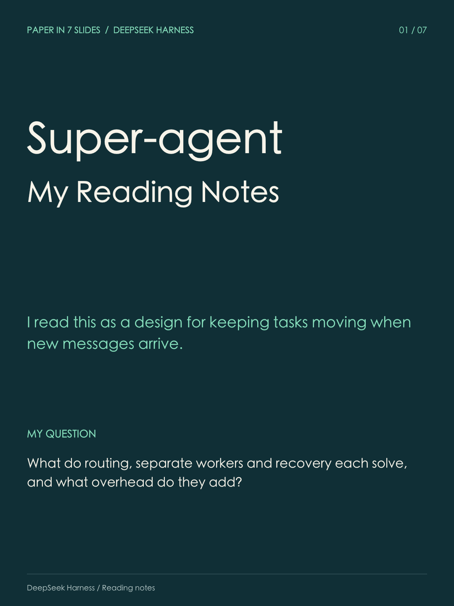
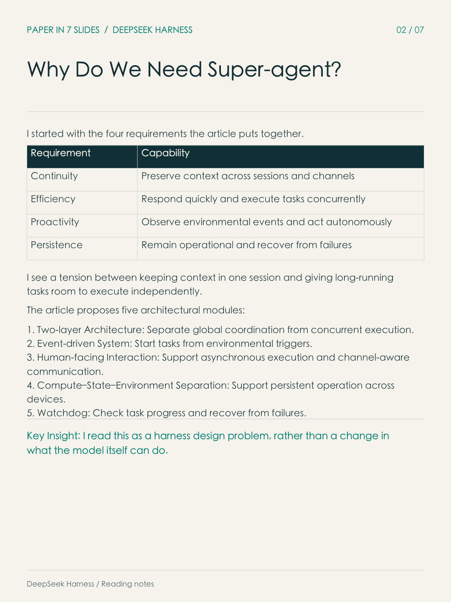
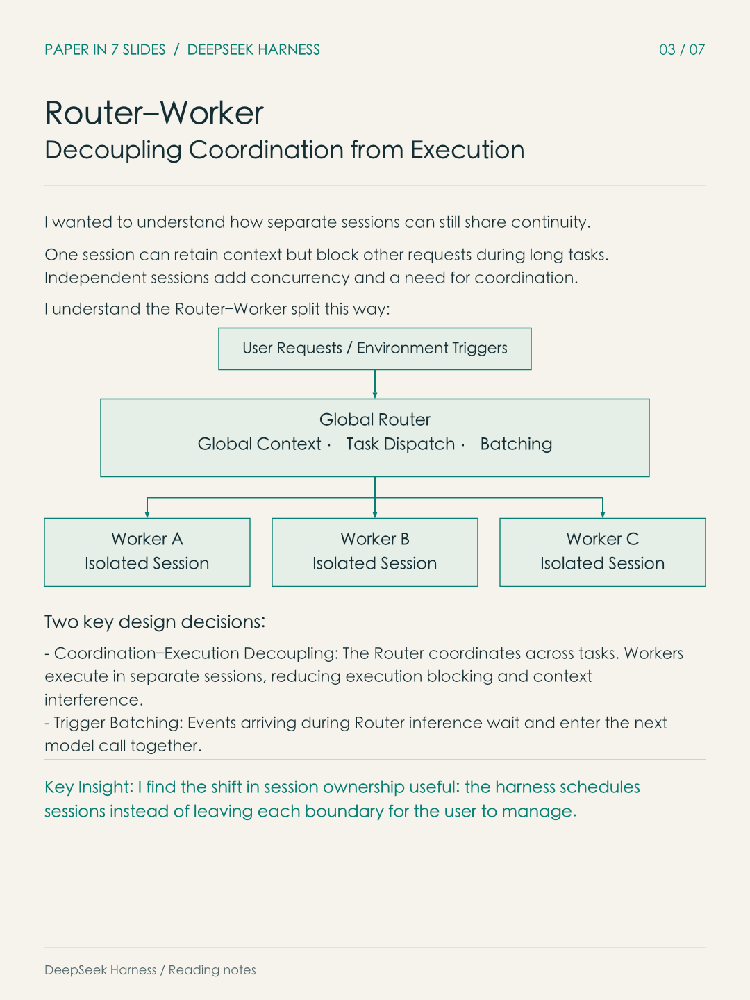
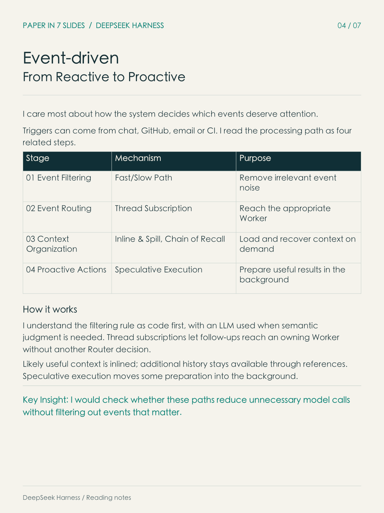
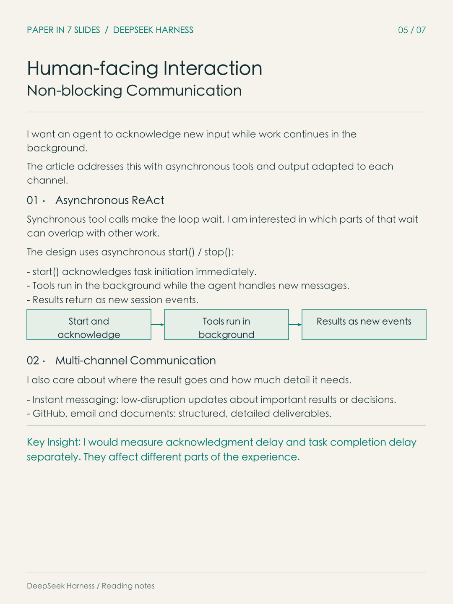
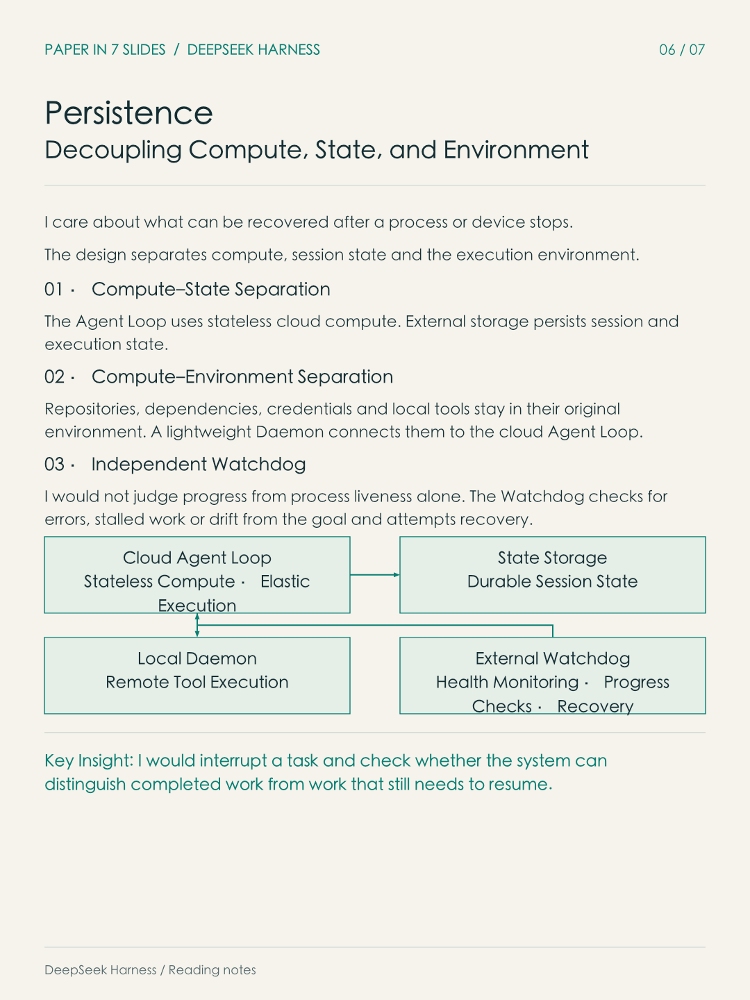
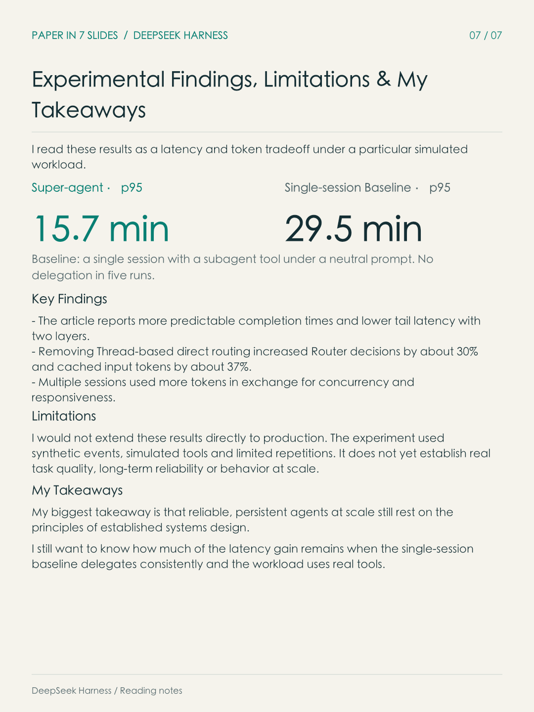

I read DeepSeek’s Super-agent article to understand how an agent can handle new events without dropping ongoing work. I found the separation between routing, execution and recovery useful.
I read the reported p95 result, 29.5 to 15.7 minutes, as a tradeoff under a simulated workload. The single-session baseline had a subagent tool but did not delegate in five runs, and the multi-session design used more tokens. I would want a comparison with consistent delegation and real tools before drawing a broader conclusion.
My reading question

My reading note
I read this as a way to keep a task moving when new input arrives. I am interested in where the work waits, and what has to stay in context.
Read slide 01 as text
Super-agent: My Reading Notes
I read this as a design for keeping tasks moving when new messages arrive.
My question: what do routing, separate workers and recovery each solve, and what overhead do they add?
Requirements

My reading note
I want quick acknowledgment without losing the thread of ongoing work. I see why those goals become harder when one session handles everything.
Read slide 02 as text
I started with the four requirements the article puts together.
| Requirement | Capability |
|---|---|
| Continuity | Preserve context across sessions and channels |
| Efficiency | Respond quickly and execute tasks concurrently |
| Proactivity | Observe environmental events and act autonomously |
| Persistence | Remain operational and recover from failures |
I see a tension between keeping context in one session and giving long-running tasks room to execute independently.
The article proposes five architectural modules:
- Two-layer Architecture: Separate global coordination from concurrent execution.
- Event-driven System: Start tasks from environmental triggers.
- Human-facing Interaction: Support asynchronous execution and channel-aware communication.
- Compute–State–Environment Separation: Support persistent operation across devices.
- Watchdog: Check task progress and recover from failures.
Key Insight: I read this as a harness design problem, rather than a change in what the model itself can do.
Router–Worker

My reading note
I find the division useful when the Router can make a small routing decision and leave execution to the Worker. I would still check how cross-task context stays consistent.
Read slide 03 as text
I wanted to understand how separate sessions can still share continuity.
One session can retain context but block other requests during long tasks. Independent sessions add concurrency and a need for coordination.
I understand the Router–Worker split this way:
User Requests / Environment Triggers
Global Router
Global Context · Task Dispatch · Batching
Worker A
Isolated Session
Worker B
Isolated Session
Worker C
Isolated Session
Two key design decisions:
- Coordination–Execution Decoupling: The Router coordinates across tasks. Workers execute in separate sessions, reducing execution blocking and context interference.
- Trigger Batching: Events arriving during Router inference wait and enter the next model call together.
Key Insight: I find the shift in session ownership useful: the harness schedules sessions instead of leaving each boundary for the user to manage.
Event-driven execution

My reading note
I paid most attention to thread subscriptions. Once a Worker owns a thread, I can see why follow-ups might not need another routing decision.
Read slide 04 as text
I care most about how the system decides which events deserve attention.
Triggers can come from chat, GitHub, email or CI. I read the processing path as four related steps.
| Stage | Mechanism | Purpose |
|---|---|---|
| 01 Event Filtering | Fast/Slow Path | Remove irrelevant event noise |
| 02 Event Routing | Thread Subscription | Reach the appropriate Worker |
| 03 Context Organization | Inline & Spill, Chain of Recall | Load and recover context on demand |
| 04 Proactive Actions | Speculative Execution | Prepare useful results in the background |
How it works
I understand the filtering rule as code first, with an LLM used when semantic judgment is needed. Thread subscriptions let follow-ups reach an owning Worker without another Router decision.
Likely useful context is inlined; additional history stays available through references. Speculative execution moves some preparation into the background.
Key Insight: I would check whether these paths reduce unnecessary model calls without filtering out events that matter.
Async interaction

My reading note
I would measure acknowledgment delay separately from task completion. I experience them as different kinds of waiting.
Read slide 05 as text
I want an agent to acknowledge new input while work continues in the background.
The article addresses this with asynchronous tools and output adapted to each channel.
01 · Asynchronous ReAct
Synchronous tool calls make the loop wait. I am interested in which parts of that wait can overlap with other work.
The design uses asynchronous start() / stop():
start()acknowledges task initiation immediately.- Tools run in the background while the agent handles new messages.
- Results return as new session events.
02 · Multi-channel Communication
I also care about where the result goes and how much detail it needs.
- Instant messaging: low-disruption updates about important results or decisions.
- GitHub, email and documents: structured, detailed deliverables.
Key Insight: I would measure acknowledgment delay and task completion delay separately. They affect different parts of the experience.
State and recovery

My reading note
I would interrupt a Worker and inspect what the system knows afterward: completed work, saved state, and the next step to resume.
Read slide 06 as text
I care about what can be recovered after a process or device stops.
The design separates compute, session state and the execution environment.
01 · Compute–State Separation
The Agent Loop uses stateless cloud compute. External storage persists session and execution state.
02 · Compute–Environment Separation
Repositories, dependencies, credentials and local tools stay in their original environment. A lightweight Daemon connects them to the cloud Agent Loop.
03 · Independent Watchdog
I would not judge progress from process liveness alone. The Watchdog checks for errors, stalled work or drift from the goal and attempts recovery.
Cloud Agent Loop
Stateless Compute · Elastic Execution
State Storage
Durable Session State
Local Daemon
Remote Tool Execution
External Watchdog
Health Monitoring · Progress Checks · Recovery
Key Insight: I would interrupt a task and check whether the system can distinguish completed work from work that still needs to resume.
Results and takeaway

My reading note
I still want to know how much of the latency gain remains when the baseline delegates consistently and the tools do real work.
Read slide 07 as text
I read these results as a latency and token tradeoff under a particular simulated workload.
Super-agent · p95
15.7 min
Single-session Baseline · p95
29.5 min
Key Findings
- The article reports more predictable completion times and lower tail latency with two layers.
- Removing Thread-based direct routing increased Router decisions by about 30% and cached input tokens by about 37%.
- Multiple sessions used more tokens in exchange for concurrency and responsiveness.
Limitations
I would not extend these results directly to production. The experiment used synthetic events, simulated tools and limited repetitions. It does not yet establish real task quality, long-term reliability or behavior at scale.
My Takeaways
My biggest takeaway is that reliable, persistent agents at scale still rest on the principles of established systems design.
I still want to know how much of the latency gain remains when the single-session baseline delegates consistently and the workload uses real tools.